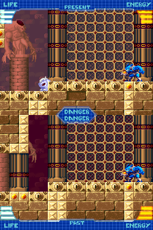
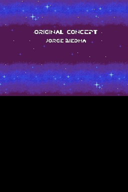
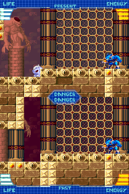
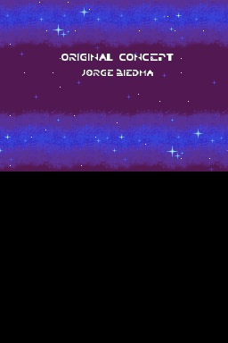

Chronos Twins

Complete on 2022-11-16
2 / 5
Release Date: Jan 18, 2010
Meta Score: 76
Screenshots
 



Notes
This is an obscure game with a few weird things going on. Firstly, it's not entirely clear whether the correct title is Chronos Twin or Chronos Twins. The game features some bad English translation so the correct answer may be lost to history. Secondly, this game was released on both DS and DSiWare, with the DS version being more obscure and only released in Europe. I'm not convinced I knew the DS version existed and came very close to accidentally including a DSiWare title in the DS list, which would have been bad.
In terms of gameplay, this game is closest to Mega Man, running and gunning and gentle platforming. The unique twist is the time split. The game takes place on both screen simulteneously, with one screen representing the past and one the future. You move on both in lockstep. In places where the terrain is different, if either contains an obstacle both will be blocked by it. This also means you can stand on platforms that only exist in one zone. This takes a little getting used to and basically means you're playing on both screens at the same time. Taking a hit in either zone damages you the same. You have different buttons to shoot in each time too. Finally, there's some light causality: if you destroy a box in the past it will be destroyed in the future, but not vice-versa. This is used for some light puzzling.
I found myself moving fairly slowly through the game, needing to look at both screens to figure out the next set of obstacles before moving on. This kept the pace somewhat sedate for me. When you're forced to move fast on some occaisions, it's super intense and hard to concentrate on both screens at once to navigate correctly.
The further I got into the game, the less I liked the core mechanic. As things get more intense it becomes effectively impossible to read the levels on the fly, and it becomes more about memorisation of what's coming up.
Death is punished in a way that's a little annoying but not too obnoxious. Losing a life resets you back to a checkpoint (which are decently frequent) except in boss fights where you can keep going. Losing all your lives restarts the current stage but this usually isn't too incredibly far back.
The game is very linear, even in the sense that you're always moving left-to-right without that much verticality. There are no unlockables or other stuff to find exploring (or any way to explore off the path).
Ultimately I respect this game for trying something unique and executing it relatively well, but it has too many flaws and not enough game to make it really good.